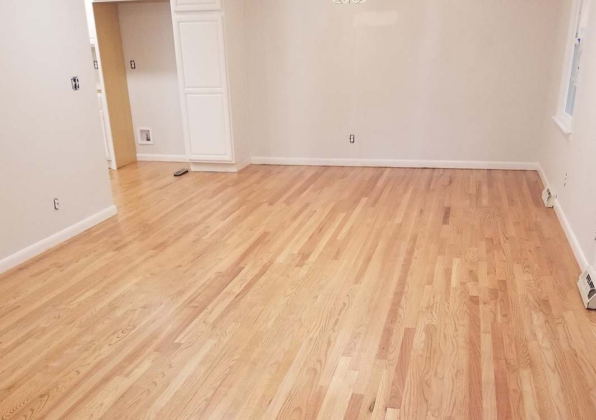
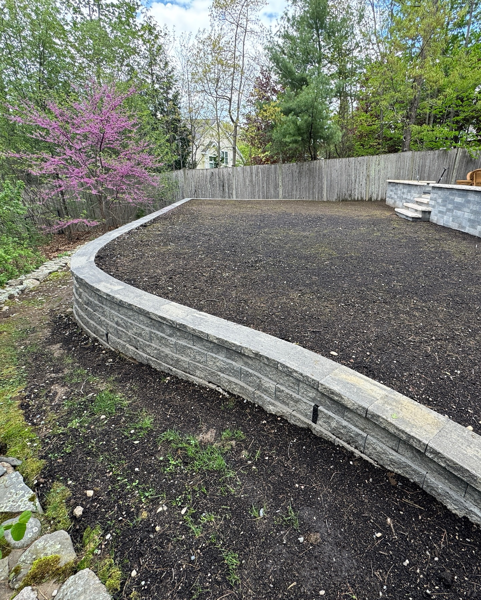

Guide To Picking Your Roofing Material: Everything You Need to Know
Selecting a new roof involves evaluating asphalt shingles for affordability, metal for longevity, TPO for flat surfaces, or Euroshield for superior hail resistance...
Whether you're planning a major project or just want to understand your options better, our Knowledge Center is packed with honest, practical guides written by our experienced team.

Selecting a new roof involves evaluating asphalt shingles for affordability, metal for longevity, TPO for flat surfaces, or Euroshield for superior hail resistance...

From budget-friendly vinyl to indestructible fiber cement, we break down five siding options to help you choose between effortless maintenance and timeless, natural beauty.

Your roof's "trim" does more than look good. Discover how these two hidden components prevent rot, repel pests, and stop your attic from overheating.

Properly installed eavestrough systems protect your foundation and prevent siding damage. Learn about seamless aluminum, steel, and copper options.

Understand the different foundation types and why regular maintenance is critical to prevent costly repairs.

Learn which drywall board is best for bathrooms, kitchens, high-impact areas, and more.

From waterproof wonders to forever investments — discover which flooring is right for your home and lifestyle.

Turn any house into a masterpiece with the right paint, textures, and finishing details.

Stop heating the neighborhood. Learn which insulation materials actually save you money.

Turn your yard into a high-end outdoor living space with the right hardscape structures.

Create a beautiful, functional outdoor space using living elements — trees, gardens, and more.

Discover why Euroshield synthetic rubber roofing is becoming the top choice for long-term protection and low maintenance.